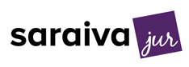

Head de Outstaffing / Líder Global de Unidade de Negócios · 2025–2026
Reconstruindo uma unidade global de outstaffing em torno de novos negócios
P&L completo: um time de 11 pessoas montado do zero, nove novos clientes enterprise, e novos negócios acima da margem legada.
US$1M+ de nova receita anualizada · margem ~20% melhor Ler o estudo de caso →Head de Marketing Digital · 2012–2016
Construindo o motor digital da maior rede de universidades do Brasil
Um scorecard nacional de maturidade em 10 universidades, números reais de SEM/funil, e uma campanha testada de TV+impresso+YouTube.
169% da meta de inscrições · funil 6M → 108K Ler o estudo de caso →Diretor Executivo Brasil + Vendas & Marketing EUA · 2018–2023
Escalando a categoria de high school americano no Brasil
De 14 para 40 escolas, presença nacional na mídia, e notas no SAT acima da média dos EUA em todos os anos medidos.
Best American High School in Brazil, 2022 Ler o estudo de caso →Growth Director, América do Norte · 2023–2025
Construindo o motor de demanda dos EUA para uma marca latino-americana de staffing
Presença constante em eventos, uma propriedade de evento cofundada, e um motor de conteúdo, com depoimentos nominais de clientes.
40% de crescimento de leads ao ano Ler o estudo de caso →
Head de Marketing, Ensino Superior · 2016–2017
Lançando a primeira plataforma de preparação para a OAB com machine learning do Brasil
O lançamento do Saraiva Aprova, um rebranding nacional, e o primeiro trailer de livro em VR do Brasil pela Editora Benvirá.
Meta de 12 meses atingida em 6 Ler o estudo de caso →Gerente Sênior de Planejamento Estratégico, LATAM · 2009–2012
Primeiro cargo de gestão, escopo continental
Uma bolsa competitiva, exposição direta à sede em Madri, e uma negociação real de venda de torres em múltiplos países.
543 + 250 torres negociadas Ler o estudo de caso →Professor de MBA + Palestrante Convidado + Avaliador Cognia (Voluntário) · 2018–2022 & contínuo
Docência, palestras & contribuições acadêmicas
Um módulo completo de MBA sobre gestão de leads, uma palestra convidada na Indiana University, e trabalho como avaliador de credenciamento na Cognia.
Currículo de 78 slides construído do zero Ler o estudo de caso →